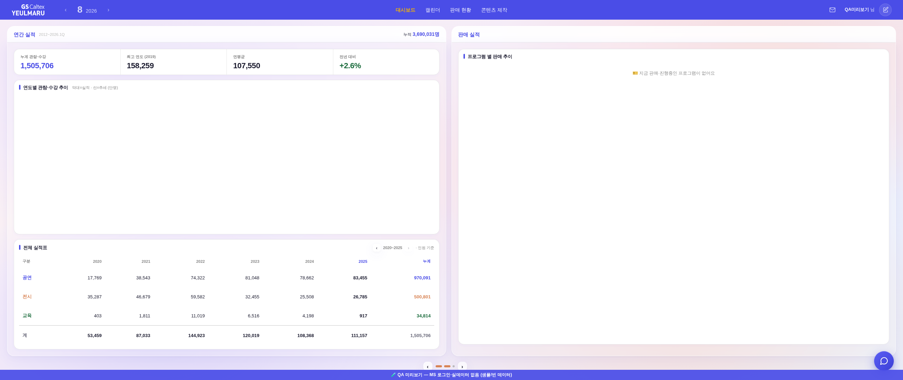
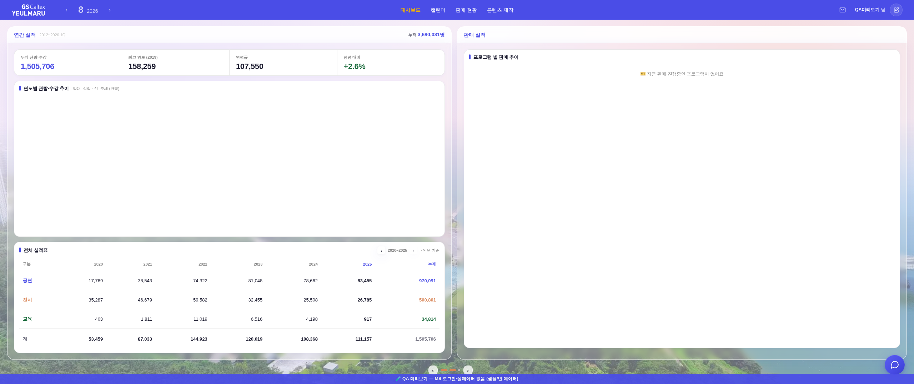

?qa=1#biz · 배경 응답 300ms 고정 · 3회 반복 · bgprobe.mjs배경 사진은 #body-wrap::before의 background:url("image/bg-yeulmaru.webp")(278KB)로 걸려 있다.
CSS 배경 이미지는 브라우저가 CSS를 파싱하고 그 요소의 레이아웃까지 끝낸 뒤에야 존재를 알게 되고, 가져오는 우선순위도 낮다.
그래서 배경 없는 화면이 먼저 페인트되고, 200ms쯤 뒤에 사진이 얹히면서 그 위의 유리(backdrop-filter) 표현이 한 번에 바뀐다 —
운영자가 말한 "블러 투명도가 적용 안 된 상태로 시작돼서 튄다".


| 요청 시작 | 도착 | 첫 페인트(FCP) | 판정 | |
|---|---|---|---|---|
| 전 #1 | 257ms | 564ms | 336ms | 배경이 첫 페인트보다 228ms 늦음 |
| 전 #2 | 250ms | 556ms | 372ms | 184ms 늦음 |
| 전 #3 | 271ms | 579ms | 408ms | 171ms 늦음 |
| 후 #1 | 34ms | 344ms | 348ms | 첫 페인트에 이미 도착 |
| 후 #2 | 34ms | 346ms | 388ms | 도착 후 페인트 |
| 후 #3 | 38ms | 397ms | 436ms | 도착 후 페인트 |
요청 시작 250ms → 34ms(216ms 앞당김), 도착 566ms → 362ms(평균 204ms 앞당김). 3회 모두 도착 ≤ 첫 페인트로 역전됐다.
<head>의 preconnect 다음에 <link rel="preload" as="image" href="image/bg-yeulmaru.webp" fetchpriority="high"> 추가.
문서 파싱이 시작되는 즉시 최우선으로 내려받게 한다. 경로는 CSS의 url()과 정확히 동일해야 중복 요청이 생기지 않으므로 쿼리(?v=)를 붙이지 않았다.
CSS·디자인 값 변경 0 — 이미지·토큰·블러 설정은 전부 그대로다.
check_design ✓(raw hex 1605/1605 무변·신규 토큰 0) · check_refs ✓ · smoke 로그인 ✓
아주 느린 회선에서는 278KB가 첫 페인트보다 늦을 수 있다. 그때도 튀지 않게 하려면 배경에 짧은 페이드를 넣는 방법이 있는데, 이는 새 연출을 만드는 일이라 기틀 원칙(디자인 임의 창작 금지)에 따라 손대지 않았다. 필요하시면 지시 주시면 반영한다.